工具
Table of Contents
1 Copying
This manual is for bitman study Sample (version 2.0, last updated 4 March 2014), which is an example in the documentation. Copyright @@texinfo:@copyright{}@@ 2013 bitman, Inc.
Permission is granted to copy, distribute and/or modify this document under the terms of the GNU Free Documentation License, Version 1.3 or any later version published by the Free Software Foundation; with no Invariant Sections, with no Front-Cover Texts, and with no Back-Cover Texts. A copy of the license is included in the section entitled "GNU Free Documentation License".
2 emacs
2.1 安装
- gnuserv安装：将emacs目录拷贝后，在系统环境变量中增加HOME键值等于emacs路径(d:\emacs)，即可；
2.2 基本操作
2.2.1 按键命令
- 按键自定义方式
- 定义全局按键
(global-set-key "\M-;" 'qiang-comment-dwim-line)
- 定义模式相关的快捷键：如下定义一个快捷键，只有在org-mode中起作用
(define-key org-mode-map (kbd "C-S-a") 'org-archive-subtree)
- 同一个按键适用于多个模式：表示只在text-mode和org-mode里打开flyspell的功能，并且绑定了C-c C-v按键，这里用到了 dolist
函数来遍历需要设置的mode
(dolist (hook '(text-mode-hook org-mode-hook)) (add-hook hook (lambda () (flyspell-mode 1) (local-set-key (kbd "C-c C-v") flyspell-goto-next-error)))) - 使用local-set-key做局部绑定，暂定；
- 定义全局按键
- 定义自己的M-x指令：如下指令进行M-x gtd，可以打开相应的文件；
(defun gtd () (interactive) (find-file "c:/homes/charles/gtd/gtd/mygtd.org"))
- 表格tbl-emacs-inf总结了平时需要的快捷键、模式、命令等操作；
emacs使用汇总 模式 按键 函数 功能 备注 C-c a org-agenda 进入org模式的agenda C-c b org-iswitchb 进入org模式的iswitchb C-c c org-capture 进入org模式的capture C-c l org-store-link 进入org模式的org-store-link F9 emacs-maximize 窗口最大化 实际上延时后最大化 C-F9 emacs-normal 窗口大小还原 C-x 4 4 split-window-h2v2 窗口分成4份，水平2份垂直2份 C-x 4 3 split-window-h2v1 窗口分成3份，水平2份垂直1份 C-x 4 5 split-window-h1v2 窗口分成3份，水平1份垂直2份 M-j split-window-rotate 窗口顺时针旋转 M-S-j split-window-hv-turn 窗口逆时针旋转 M-g goto-line 跳转到某行 C-, scroll-left 屏幕左移命令 C-. scroll-right 屏幕右移命令 F3 repeat-complex-command 重复上一命令 C-x z F8 eshell 打开eshell C-F8 open-eshell-other-buffer 在另一个buffer里面打开eshell C-; set-mark-command 设置标记起始位置 原来绑定在C-SPC上 F2 ecb-hide-ecb-windows ecb模式窗口隐藏 C-F2 ecb-show-ecb-windows ecb模式窗口显示 M-; user-comment-dwim-line 代码注释 F7 quick-compile 编译 设置编译C F10 my-transparent 设置或者取消emacs透明 C-c 1 org-time-stamp org模式时间戳 C-c d insert-current-date 插入当前日期 C-c t insert-current-time 插入当前时间 C-F1 manual-entry 进入manual F1 open-key-info-file 进入自定义快捷键帮助 byte-compile-file 编译elisp文件 describe-current-coding-system 显示当前buffer的编码格式 C-x RET f 改变当前buffer的编码格式 C-x { 往左加宽buffer尺寸 C-x } 往右加宽buffer尺寸 C-x ^ 往上加高buffer尺寸 目录模式 n 向下查看文件 C-x d p 向上查看文件 > 向下查看目录 < 向上查看目录 ^ 返回上一级目录 M-( 向下查看已标记 M-) 向上查看已标记 g 刷新 s 切换名称/日期排序方式 i 当前窗口下面打开该子目录 v 查看当前文件（当前窗口） o 查看当前文件（另一窗口） y 查看当前文件类型 等号 比较文件，相当于shell下的diff m 标记（mark） u 取消标记 U 取消所有标记 * / 标记所有文件夹 * * 标记所有可执行文件 * @ 标记所有符号链接 * c 改变标记的符号 % m 根据正则表达式改变标记文件 % g 根据正则表达式改变标记文件的内容 d 标记为删除 ~ 标记所有备份文件为删除 # 将存盘文件标记为删除 & d 根据正则表达式标记删除 X 执行标记的操作 + 新建目录 C-x C-q 将文件列表设置为只读 D 删除文件 标记（m）后的操作 C 拷贝 标记（m）后的操作 O 改变用户 标记（m）后的操作 G 改变群组 标记（m）后的操作 S 符号链接 标记（m）后的操作 H 硬链接 标记（m）后的操作 Z 压缩 标记（m）后的操作 W 复制文件名 标记（m）后的操作 K 删除行，刷新后可恢复 标记（m）后的操作 revert-buffer 刷新buffer emacs -q 进入emacs默认最小配置 启动emacs时使用 eval-current-buffer 当前配置立马生效 rename-buffer 重命名当前buffer
2.2.2 其他
- 在eshell中使用$PATH$可以输出当前emacs的路径path；
- 查询当前模式:C-h m或者M-x describe-mode ;
- el源文件编译:对于emacs某些包，有生成的elc的编译文件，emacs启动时，调用elc启动速度会更快，但是如果修改了源文件el，则可 以使用M-x：byte-recompile-directory来重新编译，才能将修改的地方起作用。比如org mode中修改latex的生成模式函数 org-export-latex-make-header
- 右键菜单配置打开命令：在注册表\HKEY_CLASSES_ROOT\AllFilesystemObjects\shell\下面新建一项Emacs，再在下面新建command项， 看起来应该是这样：\HKEY_CLASSES_ROOT\AllFilesystemObjects\shell\Emacs\command\ 然后把command项右边的默认值设为 Path\gnuclientw.exe，并加上"%1"
- emacs配置立马生效: 可以M-x eval-current-buffer立马生效;
2.2.3 计算器
- 计算器模式1：M-x calc进入，输入"10"回车"d2，这个d2会把窗口中的所有数字显示为二进制形式，所有的数字都会以"2#"开头,以表 示它们是二进制形式。如果要重新用十进制显示，则输入"d0"即可，同样，也可以用"d8""，"d6"来显示八进制和十六进制的格式。如 果要进行进制转换，比如讲二进制的1010转换为十六进制，可以这样先d6设定16进制模式，然后再minibuffer中输入2#1010，回车；
- 计算器模式2：M-x quick-calc进入，启动后会在minibuffer里提示输入数学计算式，回车就显示结果；
2.2.4 图片
- 导入图片见图img-pic-test:可以通过调节width=.1\ linewidth来限制图片输出的大小, 其中.1表示倍率，或者使用scale=0.2
进行调节
emacs导图测试
2.2.5 字体
- eshell 查看系统字体:eshell:fc-list(或者fc-list.exe) (空格) :lang=zh-cn
2.2.6 编码
- 设置编码格式:使用快捷键：C-x RET f 然后可以用 TAB 显示所有存在的编码。这个命令会改变文件！如果只是出现乱码，并且不想改 变文件本身，可以用命令C-x RET r ( M-x revert-buffer-with-coding-system)来用指定的编码重新读入这个文件。不改变当前文件 编码，但将该文件另存为utf-8编码格式：C-x RET c(M-x universal-coding-system-argument ) utf-8
- 对于org-mode导出HTML时，如果org-mode是gbk/utf-8，则导出的HTML也是gbk/utf-8；
2.3 elisp
2.3.1 函数
2.4 org-mode
org-mode在线帮助文档。
2.4.1 可视化
- 初始可视化：在org文档的开始，加上#+startup: overview, 其中overview可以是
如下选项
- overview：只显示第一级标题；
- content：显示所有标题；
- showall：显示所有标题和正文；
- showeverything：显示所有标题和正文, 雷同showall；
2.4.2 抽屉
使用抽屉drawer，在导出时，drawer里面的文字不会被到导出, 可以在里面放入一些 注解, 可以使用命令'org-insert-property-drawer'
2.4.3 块
代码块可以设置#+startup: hideblocks, 做初始化折叠或打开。可以有如下选项
- hideblocks：隐藏代码块；
- nohideblocks：显示代码块；
2.4.5 序号
- 无序号：无序号符号可以是'-'和'+'和'*'；
- 有序号：可以是'1.'和'1)';
- 对序号的描述；
2.4.6 字体
试试 粗体 ，试试 斜体 , 试试删除线 删除线 ，试试 下划线, 试试下标 H2O 试试上标 E=mc2 ，等宽字体 git, code
2.4.7 公式
- 公式：在本行，\(a^2+b^2=c^2\)
- 公式：在本行，\(a^2 + b^2 = c^2\)
- 公式：单独成行。$$a^2 + b^2 = c^2$$
- 公式：单独成行。\[a^2 + b^2 = c^2\]
- 公式：在本行，\(\sqrt{2}\)
- 和公式：$$a=\sum_{i=0}^{n}a_{i}$$
- 分数公式：$$\frac{x}{y}$$
2.4.8 表格
2.4.8.1 内建表格
- 固定列宽：可以在某列中写入<n>，n表示n个英文字符宽度，超出宽度的字符将隐
藏，并且以'=>'结尾, 使用鼠标将光标移到'=>'上，emacs将弹出小窗口显示内容，
如果要编辑，可以使用C-c ', 可以在文件头使用#+startup: align来显示与否
- align: 隐藏多余的字符；
- noalign：显示多余的字符；
- 表格对齐
- '<r>': 表格右对齐；
- '<c>': 表格左对齐；
- '<l>': 表格左对齐；
- 表格合并：在一空行中，首列使用'/', 将需要合并的列用'<>'括起来，则导出的文 档中合并了的列，将会有垂直线显示；
2.4.8.2 表格插件
可以使用table-mode，命令table-insert可以插入一个n行n列的表格， table-span-cell可以合并单元格。
2.4.8.3 表格第三方
可以将内建表格用在其他mode中,只需要配置.
(add-hook 'message-mode-hook 'turn-on-orgtbl)
2.4.9 画图
- ditaa测试：如果要支持中文，org文档需为utf-8的格式，这是java调用ditaa.jar
时的默认格式, 效果如图img-test所示
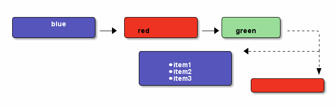
测试画图
- gnuplot，见图img-gnuplot-test所示：
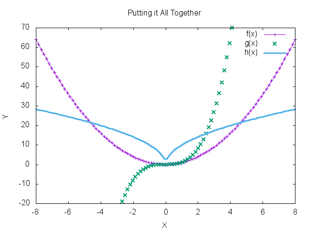
测试图
引用表格画图：表格见表tbl-data-plot所示。 #+plot: title: "example table" ind: 1 type: 2d with: lines
independent var first dependent var second dependent var 0.1 0.425 0.375 0.2 0.3125 0.3375 0.3 0.24999993 0.28333338 0.4 0.275 0.28125 0.5 0.26 0.27 0.6 0.25833338 0.24999993 0.7 0.24642845 0.23928553 0.8 0.23125 0.2375 0.9 0.23333323 0.2333332 1 0.2225 0.22 1.1 0.20909075 0.22272708 1.2 0.19999998 0.21458333 1.3 0.19615368 0.21730748 1.4 0.18571433 0.21071435 1.5 0.19000008 0.2150001 1.6 0.1828125 0.2046875 1.7 0.18088253 0.1985296 1.8 0.17916675 0.18888898 1.9 0.19342103 0.21315783 2 0.19 0.21625 2.1 0.18214268 0.20714265 2.2 0.17727275 0.2022727 2.3 0.1739131 0.1989131 2.4 0.16770833 0.1916667 2.5 0.164 0.188 2.6 0.15769238 0.18076923 2.7 0.1592591 0.1888887 2.8 0.1598214 0.18928565 2.9 0.15603453 0.1844828 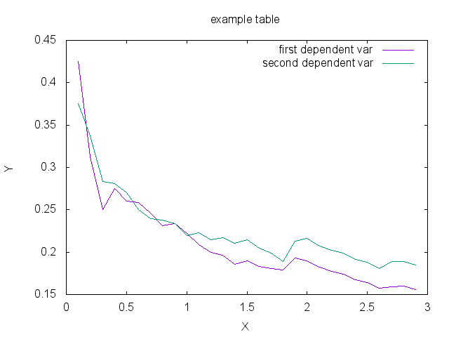
2.4.10 链接
- 链接之间跳转：C-c C-x n和C-c C-x p
- 内部链接：只需要在某个需要链接到的地方使用# target ，设置一个标点，再 在使用的地方，使用像[[][]]这样的格式去定位标点，并给出描述符，或者直接使 用快捷键C-c C-l添加该点，比如已经在org-mode标题处设置了标点，然后使用 [[][]]定位过去就是 org-mode, 并且可以使用C-c &返回来, 使用C-c C-o可以打开 标点。
- 辐射链接：使用3个尖括号括起的锚点，可以将文档中所有的锚点链接起来，比如 buffer ;
- 外部链接：包括链接到文件、网址、email等
- 包含：可以在头部使用#+include:"path/file"包含某个文件，比如org，然后就可 以将所有的org文件包含到一个文件里面统一导出；后面添加一定的开关可以导入特 定的数据，比如添加 src c ，可以导入c代码；使用 lines 关键字可以导入文 件的某几行
2.4.11 gtd
gtd状态之间转换可以使用快捷键C-c C-t
- 工作流状态: 对于一个工作流可以使用 sequence 的工作流设置状态如
(setq org-todo-keywords '((sequence "TODO" "VERIFY" "|" "DONE")))
- 工作类型: 使用 type 设置工作类型如
(setq org-todo-keywords '((type "Fred" "Sara" "Lucy" "|" "DONE")))
- 文件个性化状态：针对每个org文件设置状态切换关键字，在org头设置如下, 行
nil可以定义两种关键字，行nil可以定义工作流状态，行
nil可以定义工作类型。
1: #+TODO: TODO FEEDBACK VERIFY | DONE CANCELED 2: #+SEQ_TODO: TODO FEEDBACK VERIFY | DONE CANCELED 3: #+TYP_TODO: Fred Sara Lucy Mike | DONE
- 状态样式：各种状态可以设置不同的颜色，字体等如
(setq org-todo-keyword-faces '(("TODO" . org-warning) ("STARTED" . "yellow") ("CANCELED" . (:foreground "blue" :weight bold))))
2.4.12 换行
一般使用一个空行表示换行，也可以使用latex的斜杠par，如果需要在某个行强行折 行，可以使用两个斜杠。如果想写类似诗句一样的格式可以使用如下方式
Great clouds overhead
Tiny black birds rise and fall
Snow covers Emacs
– AlexSchroeder
2.4.13 babel
- verse: 见换行一节的用法
- quote：如果从别的文章中引用一段话，通常需要将这些语句左右都流出一定空间，
如下面所示
Everything should be made as simple as possible, but not any simpler – Albert Einstein
- center: 如果需要将某些文字中心对齐，可以使用如下方式
Everything should be made as simple as possible,
but not any simpler - example: 里面的文字不会被解析，原样导出
Some example from a text_file.
也可以在首行使用冒号加一个空格后面添加文字作为一个简化方式，如
Some example from a text_file.
- src: 可以放入一些代码, 使用-n或者+n会对代码标记行号, 其中-n会使代码行号
重新计数，+n从上一个代码片段累计计数，使用-r表示可以引用行号，只需要在某
行末尾使用（ref：name），在引用的地方使用C-c C-l 输入连接（name）就可引
用了。使用-i可以对某些代码做合理缩进
1: (save-excursion 2: (goto-char (point-min)))
In line 1 we remember the current position. Line 2 jumps to point-min.
2.4.14 宏
可以在org中定义宏，类似c的宏，然后可以在段落、标题、引用块、表格、列表中使 用。系统内建的宏有
- title：org文档的标题；
- author：org文档的作者；
- email：邮件地址；
- date：日期戳，还可以定义时间戳的格式，参考宏帮助文档；
- time: 时间戳，同date；
- modification-time：date和time的叠加；
- input-file：This macro refers to the filename of the exported file；
- property：属性，暂未知；
- select_tags: 如果在节标题中做了tag标注，可以使用这个来选择性的导出某些 节。
- exclude_tags: 和select_tags相反；
2.4.15 注释
可以使用快捷键C-c ; 将某个小节注释掉，导出时不会出现在导出文档中。 ‘#+BEGIN_COMMENT’ … ‘#+END_COMMENT’好像不起作用；
2.4.16 导出
- org-mode转换到pdf需要在org-mode文件中头部使用如下头;
#+ title: 我的记事本 #+ author: lxc #+ latex_class: org-latex-pdf #+ latex: \newpage
- 中文首行缩进2格：可以在上一自然段末尾使用斜线加par或者在两个自然段直接空两行。
- 由于org文档转换为latex文本时，中间需要软件iconv将之转换为utf-8格式，而org 源文档是gbk格式，所以如果将org文档由gbk格式转换为了别的格式，比如utf-8， 则需要修改iconv的转换命令，详细见org个配置文档“my-org-mode.el”
- 如果需要修改org文档中嵌入的代码宽度高度，可以修改"my-org-mode.el"中的如下
代码"页边距"
\lstset{numbers=left, %设置行号位置 numberstyle=\\tiny, %设置行号大小 keywordstyle=\\color{blue}, %设置关键字颜色 commentstyle=\\color[cmyk]{1,0,1,0}, %设置注释颜色 frame=single, %设置边框格式 escapeinside=``, %逃逸字符(1左面的键)，用于显示中文 breaklines, %自动折行 extendedchars=false, %解决代码跨页时,章节标题，页眉汉字不显示 xleftmargin=10em,xrightmargin=5em, aboveskip=0.5em, %设置页边距 tabsize=4, %设置tab空格数 showspaces=false} %不显示空格 - 大纲级别:若需导出更深入的大纲级别,可设置 org-export-headline-levels
或者在文件头使用
#+options: h:4
- 目录：
- 可以设置目录的生成级别或者不导出目录，可设置 org-export-with-toc
或者在每个文件中使用
#+OPTIONS: toc:2 only inlcude two levels in TOC #+OPTIONS: toc:nil no default TOC at all
- 可以设置目录导出成list或者table
#+TOC: listings build a list of listings #+TOC: tables build a list of tables
- 可以设置目录的生成级别或者不导出目录，可设置 org-export-with-toc
或者在每个文件中使用
2.4.16.1 配置
可以使用 \#+opinion 等关键字对文档导出做配置，也可以将这些配置写入某个 filename 文件中，然后在头使用 \#+setupfile: filename 加载这些配置。
- 关键字：见宏，或见表tbl-key-words所示；
配置关键字 项 说明 #+TITLE: the title to be shown (default is the buffer name) #+AUTHOR: the author (default taken from user-full-name) #+DATE: a date, an Org timestamp119, or a format string for format-time-string #+EMAIL: his/her email address (default from user-mail-address) #+DESCRIPTION: 某些pdf软件可以查看pdf的属性，属性包括文章描述 #+KEYWORDS: 某些pdf软件可以查看pdf的属性，属性包括文章关键字 #+LANGUAGE: language for HTML, e.g. ‘en’ (org-export-default-language) #+TEXT: Some descriptive text to be inserted at the beginning. #+TEXT: Several lines may be given. #+OPTIONS: H:2 num:t toc:t \backslash{}n:nil @:t ::t |:t ^:t f:t TeX:t … #+BIND: lisp-var lisp-val, e.g.: org-export-latex-low-levels itemize You need to confirm using these, or configure org-export-allow-BIND #+LINK_UP: the ``up'' link of an exported page #+LINK_HOME: the ``home'' link of an exported page #+LATEX_HEADER: extra line(s) for the LaTeX header, like \usepackage{xyz} #+EXPORT_SELECT_TAGS: Tags that select a tree for export #+EXPORT_EXCLUDE_TAGS: Tags that exclude a tree from export #+XSLT: the XSLT stylesheet used by DocBook exporter to generate FO file - options: 带一定的参数 可以配置不同的导出形式, 见表tbl-option-para,
比如后面跟 email:nil 表示导出的文档不带email地址， email:t 表示带地址。
option项的参数说明 项 说明 H: set the number of headline levels for export num: turn on/off section-numbers toc: turn on/off table of contents, or set level limit (integer) \n: turn on/off line-break-preservation (DOES NOT WORK) @: turn on/off quoted HTML tags :: turn on/off fixed-width sections | : turn on/off tables ∧: turn on/off TeX-like syntax for sub- and superscripts. If you write "^:{}", ab will be interpreted, but the simple ab will be left as it is. \mathrm{-}: turn on/off conversion of special strings. f: turn on/off footnotes like this5. todo: turn on/off inclusion of TODO keywords into exported text tasks: turn on/off inclusion of tasks (TODO items), can be nil to remove all tasks, todo to remove DONE tasks, or list of kwds to keep pri: turn on/off priority cookies tags: turn on/off inclusion of tags, may also be not-in-toc <: turn on/off inclusion of any time/date stamps like DEADLINES *: turn on/off emphasized text (bold, italic, underlined) TeX: turn on/off simple TeX macros in plain text LaTeX: configure export of LaTeX fragments. Default auto skip: turn on/off skipping the text before the first heading author: turn on/off inclusion of author name/email into exported file email: turn on/off inclusion of author email into exported file creator turn on/off inclusion of creator info into exported file timestamp: turn on/off inclusion creation time into exported file d: turn on/off inclusion of drawers - 标题级数：使用如下配置可以设置标题显示级数，使用option的h参数不够。
#+latex_header: \setcounter{tocdepth}{5} #+latex_header: \setcounter{secnumdepth}{5}
2.4.16.2 beamer
不用#+latexclass也可以导出幻灯片，见代码。
2.4.16.3 pdf
可以设置一些导出配置选项
- DESCRIPTION：文档的描述；
- LATEX_CLASS：预定义的一些latex配置；
- LATEX_CLASS_OPTIONS: 配置选项；
- LATEX_HEADER: 添加一些latex包；
- LATEX_HEADER_EXTRA: 添加的一些其他配置；
- KEYWORDS：文档关键字；
- SUBTITLE：文档小标题；
2.4.16.4 html
2.4.16.5 特殊符号
- 表格里面的竖线: latex命令|;
- 表格里面的横线：latex命令\mathrm{-};
- 表格里面的上尖括号：latex命令∧；
- 表格里面的左尖括号：latex命令\textless{};
- 表格里面的右尖括号：latex命令\textgreater{};
3 latex
3.1 方法
3.2 符号
3.2.1 数学模式重音符号
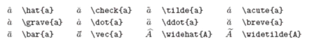
3.2.2 小写希腊字母
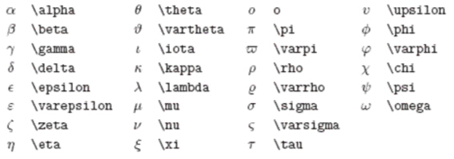
3.2.3 大写希腊字母
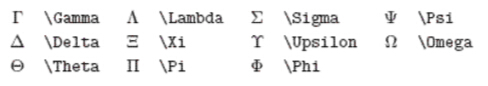
3.2.4 二元关系符
可以在前面加上\ not来得到其否定形式。 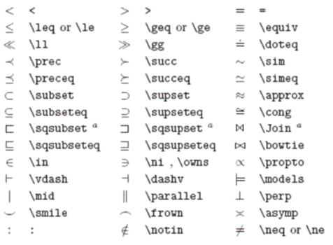
3.2.5 二元运算符
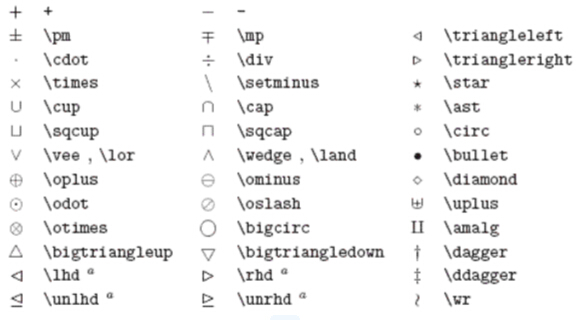
3.2.6 大尺寸运算符
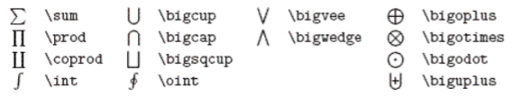
3.2.7 箭头
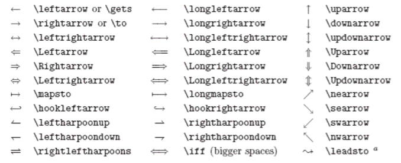
3.2.8 定界符
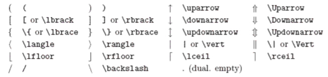
3.2.9 大尺寸定界符
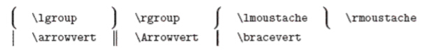
3.2.10 其他符号
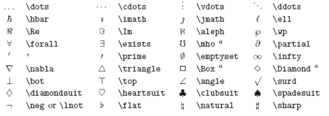
3.2.11 非数学符号
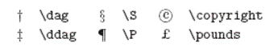
3.2.12 AMS定界符
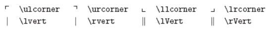
3.2.13 AMS希腊和希伯来字母
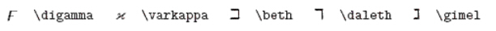
3.2.14 AMS二元关系符
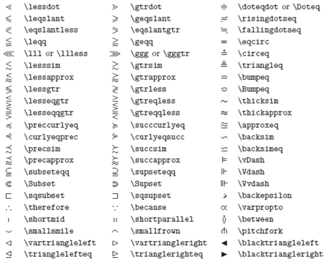
3.2.15 AMS箭头
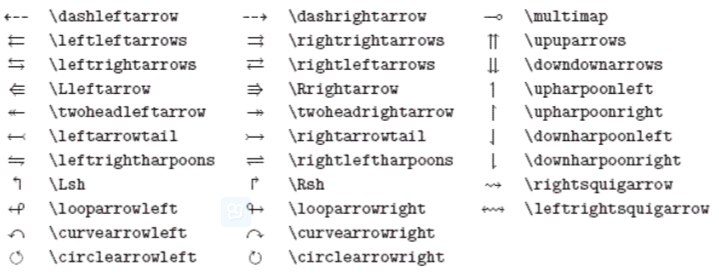
3.2.16 AMS二元否定关系符和箭头
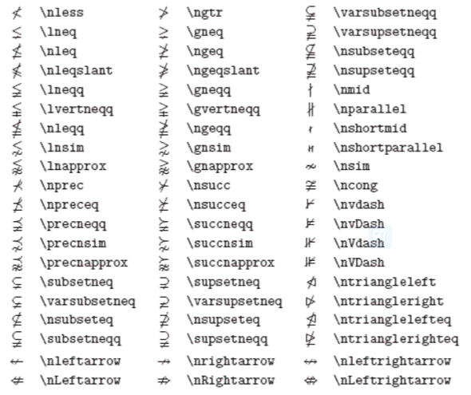
3.2.17 AMS二元运算符
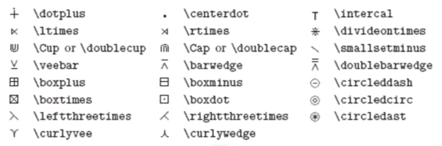
3.2.18 AMS其他符号
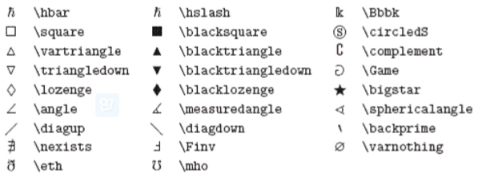
3.2.19 微积分符号
- \(\int_{0}^{n}\)
- \(\sum_{i=0}^{n}\)
- \(\sum\limits_{i=0}^{n}\)
- \(\mathrm{d}x\)
4 keil
- 设置emacs编辑器：在Customer Tools Menu菜单中，Command设置emacs路径，在Argument中!E代表编辑当前文件；在Menu Content中新 建个命令emacs(&E), 括号里面的代表快捷键.